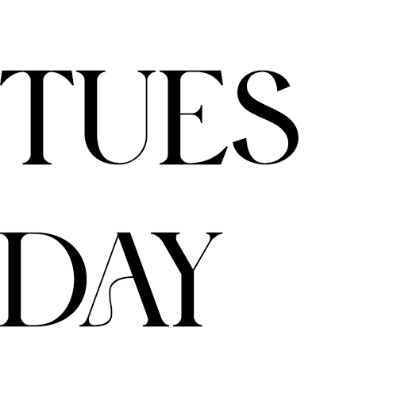
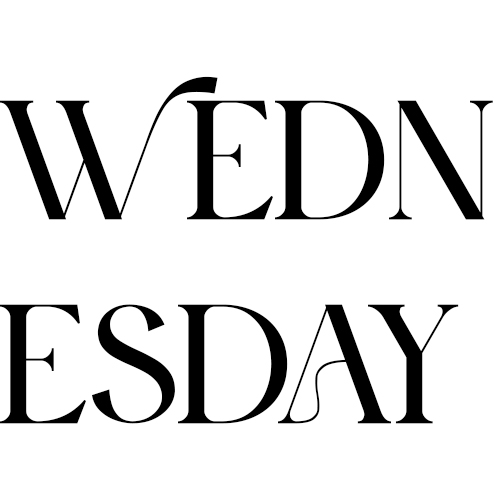
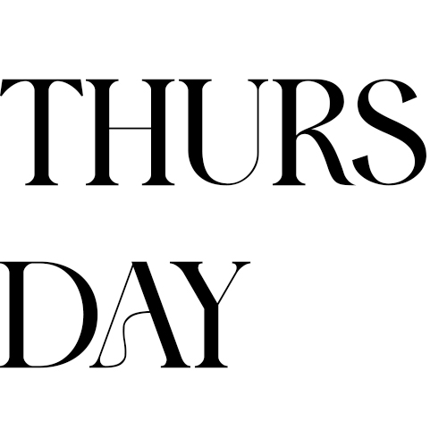

Week 8
Daily Standups:

16th June 2025
What did I do today?
Today was a production day, and I managed to complete all the coding for my app, which I’m absolutely stoked about. Not only did I hit my goal for the day, but I also got the database working properly.
Were there any blockers?
No blockers today.
17th June 2025
What did I do yesterday?
Yesterday I completed all the coding for my app and got the database working. I’d planned to get it done on the day, and actually managed to finish everything, which left me feeling incredibly proud and motivated.
What will I do today?
Today I’m focusing on finishing my presentation slides. I actually started them towards the end of last week, but now I’m getting them fully done and finalised. As I go, I’m also practising the presentation to make sure it stays within the time limit and flows smoothly.
Are there any blockers?
I’m feeling a bit concerned about whether I’m including the right amount of content in the presentation. We don't have a lot of time to present, whcih makes it hard to know what to prioritise, and I keep worrying that I’ll leave something important out.
18th June 2025
What did I do yesterday?
Yesterday I finished my presentation slides and spent time practising to make sure I stayed within the time limit.
What will I do today?
This morning I’ll be reviewing my presentation slides one last time before submitting them by the 10am deadline. Once that’s done, I’ll be focusing on my case study for the rest of the day.
Are there any blockers?
The case study feels a bit overwhelming at this stage. We need ten images, and they can’t all just be app mock-ups, which makes it tricky to know where to begin. I'm still figuring out how to approach the layout and content without it becoming too repetitive.
19th June 2025
What did I do yesterday?
Yesterday, I submitted my presentation slides in the morning, then spent the rest of the day working on my case study. It was quite overwhelming at first, especially trying to create ten diverse images that went beyond just app mock-ups. I looked at a Best Awards case study for reference, then gathered templates and visual inspiration to guide my structure. Once I had a clear plan, I began updating or creating each piece with my own content. A bonus was that I also managed to complete my creative media strategy alongside the case study, since some of the collateral overlapped. It ended up being a very productive use of time.
What will I do today?
Today is my final day, since tomorrow is a public holiday. I started the morning by practising my presentation several times, and then delivered it shortly after midday. This afternoon I’m focusing on finalising everything for submission (completing blog posts, preparing all my files, and getting everything uploaded). By the end of the day, I’ll be completely finished with the project.
Are there any blockers?
No blockers today. It’s been a busy one, but everything is coming together and I’m on track to get it all submitted.
Retrospective:
What went well?
- • I finished the coding for my app early in the week, including getting the database working, which was a huge win and a real boost to my confidence
- • I completed and practised my presentation with time to spare, which helped me feel prepared and focused when the time came to present.
- • I managed to get my case study and creative media strategy done efficiently by tackling both together, which saved time and helped streamline the workload.
- • Despite having a lot going on with work and other responsibilities, I was able to stay on track and submit everything before the public holiday.
- • The case study felt overwhelming at first, and I found it difficult to know where to start or how to make the imagery feel varied enough.
- • My energy levels were really low at this point in the term. I’ve been running on empty for a while, and the burnout definitely crept in during the final weeks.
- • I need to build in more rest and recovery time across the term, not just at the end.
- • I also want to learn to recognise the tipping point where pushing further is no longer helpful, and instead give myself permission to rest before it becomes overwhelming.
What didn’t go well?
What can be improved?
What will I try for the next project?
This project has taught me a lot about balance. Next time, I’ll try to be more intentional about preserving my energy and recognising when “good enough” is actually enough.
I’ve learnt that discomfort is part of growth, especially when lecturers are challenging me to push further, so I want to keep sitting with that and leaning into it. Most importantly, I want to take forward the core theme of my project (protecting rest) and apply it to myself..
I’ve learnt that I need to trust my instincts, be kind to myself, and make space to properly switch off. That’s not just a project message, that’s something I need to live by too.